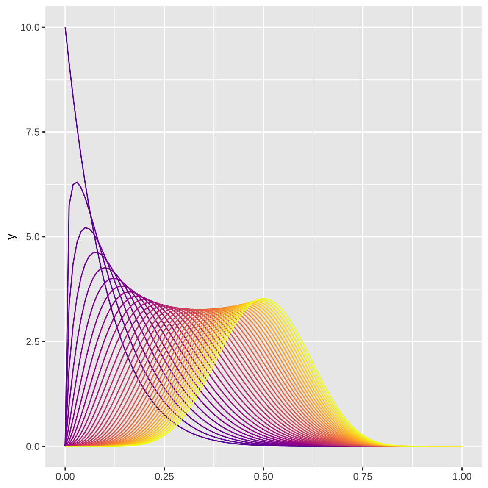

9 Statistics
The beta distribution is a challenge to visualise because it has two parameters that you can vary. But now that I’m getting better at animated plots, I thought I could try to visualise variation in the shape1 parameter with line colour and variation in shape2 with animation.
9.1 Make one frame
As always, make one frame first. You can use stat_function() to plot data from a distribution using functions like dnorm(), and dbeta(). I can’t figure out how to set the args from the mapping, so I’m using a for loop to add each density line. This feels inefficient, but it works.
Code

Colours for each line come from plasma(), but this won’t give you a colour guide, so add geom_density(aes(x = 1, color = 1), alpha = 0) to make an invisible line that generates a colour guide that you can modify with scale_color_viridis_c(). This will generate a warning, so you can turn off warnings in the code chunk.
Clean up the plot and add an annotation for the shape2 value. I finally figured out how to make an annotation outside of the panel area: set clip = “off” in coord_cartesian().
Code
shape1 <- seq(1, 10, .25)
shape2 <- 10
label <- sprintf("shape2 = %.2f", shape2)
g + coord_cartesian(xlim = c(0, 1),
ylim = c(0, 10),
clip = "off") +
labs(x = NULL, y = NULL) +
annotate(x = .5, y = 10, label = "Beta Distribution",
geom = "text", color = "white", family = "Fira Code",
vjust = 1, hjust = 0.5, size = 7) +
annotate(x = -.01, y = -2.8, label = label,
geom = "text", color = colours[which(shape1 == shape2)],
family = "Fira Code", hjust = 0, size = 3.9) +
geom_density(aes(x = 1, color = 1), alpha = 0) +
scale_color_viridis_c(name = "shape1 =\n",
option = "B", begin = .2,
limits = c(1, 10), breaks = 1:10) +
theme_dark() +
theme(text = element_text(family = "Fira Code", color = "white"),
axis.text = element_text(family = "Fira Code", color = "white"),
panel.background = element_blank(),
plot.background = element_rect(fill = "black"),
plot.margin = unit(c(0.1, 0.1, .4, 0.1), "in"),
legend.position = "bottom",
legend.background = element_blank(),
legend.text = element_text(color = plasma(10, begin = .2)),
legend.key.width = unit(.14, "npc"))9.2 Functionalise it
Now turn this into a function so you can vary shape1 and shape2. Save the resulting plot as a PNG to a temporary file and return the filename so gifski can it to make an annotated gif.
Set up function
beta_plot <- function(shape1 = 1, shape2 = 2) {
dat <- crossing(
shape1 = shape1,
shape2 = shape2
)
colours <- plasma(nrow(dat), begin = .2)
label <- sprintf("shape2 = %.2f", shape2)
g <- ggplot()
for (i in seq_along(colours)) {
g <- g + stat_function(color = colours[i],
fun = dbeta,
args = list(shape1 = dat$shape1[i],
shape2 = dat$shape2[i]))
}
g <- g + coord_cartesian(xlim = c(0, 1),
ylim = c(0, 10),
clip = "off") +
labs(x = NULL, y = NULL) +
annotate(x = .5, y = 10, label = "Beta Distribution",
geom = "text", color = "white", family = "Fira Code",
vjust = 1, hjust = 0.5, size = 7) +
annotate(x = -.01, y = -2.8, label = label,
geom = "text", color = colours[which(shape1 == shape2)],
family = "Fira Code", hjust = 0, size = 3.9) +
geom_density(aes(x = 1, color = 1), alpha = 0) +
scale_color_viridis_c(name = "shape1 =\n",
option = "B", begin = .2,
limits = c(1, 10), breaks = 1:10) +
theme_dark() +
theme(text = element_text(family = "Fira Code", color = "white"),
axis.text = element_text(family = "Fira Code", color = "white"),
panel.background = element_blank(),
plot.background = element_rect(fill = "black"),
plot.margin = unit(c(0.1, 0.1, .4, 0.1), "in"),
legend.position = "bottom",
legend.background = element_blank(),
legend.text = element_text(color = plasma(10, begin = .2)),
legend.key.width = unit(.14, "npc"))
# save to a temporary file
f <- tempfile(fileext = ".png")
ggsave(f, g, width = 6, height = 6, device = png)
f
}Test out the function. I hid a few warnings, including one about setting legend.text colour to 10 values, but it seems to work fine for now.
Map the function over a range of shape2 values. Keep shape1 always the same vector.
9.3 Animate
Combine the plots in forward order with the same plots in reverse order to make the frames loop back and forth, then save as an animated gif.